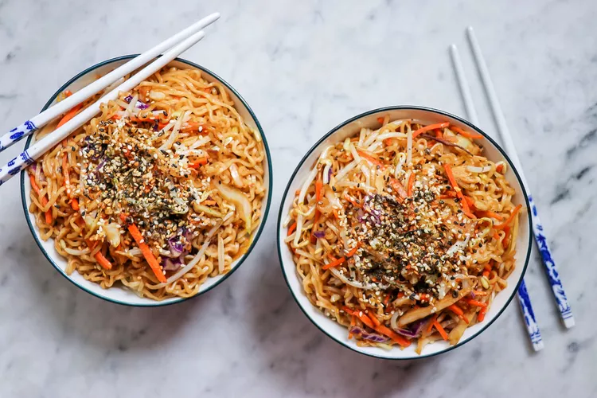

Cozy up to a big bowl that feels like a big, warm food hug. Inspired by TikTok food trends and with results that taste a lot like takeout ramen, this 25-minute meal is a massive upgrade from the standard packet of pasta you might remember from dorm room "cooking". That's because the technique involves dressing up each bowl of crunchy fresh vegetables and ramen noodles with a complex and umami-rich soy-based sauce.